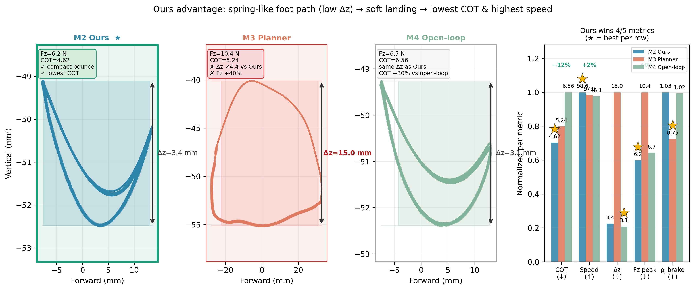
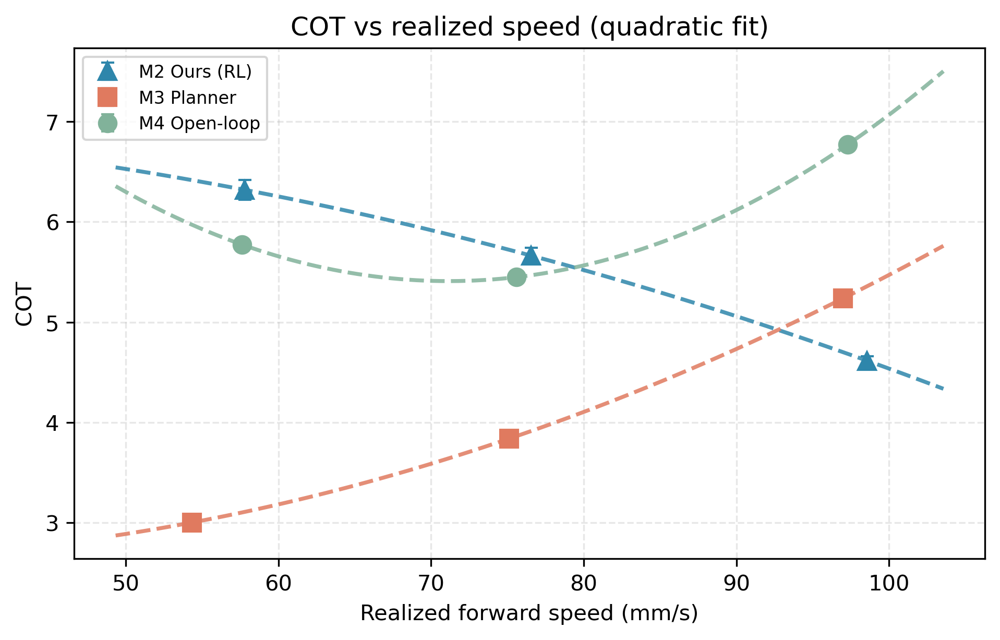

Key result: lowest cost of transport
Steady-state window, matched speed ~103.5 mm/s
| Controller | Steady COT ↓ | Speed (mm/s) |
|---|---|---|
| Planner | 5.69 | 103.3 |
| Planner-simplified | 4.67 | 104.1 |
| Ours (learned) | 3.72 | 103.5 |
Lower COT is better. Ours is ~35% below the Planner and ~20% below the Planner-simplified baseline at the same speed.

Where the energy goes: the learned controller trades costly
negative/contact work for useful propulsion.

COT versus forward speed across the velocity sweep — Ours stays
below both baselines throughout.

Three-way locomotion metrics summarising speed tracking, effort, and
gait quality.